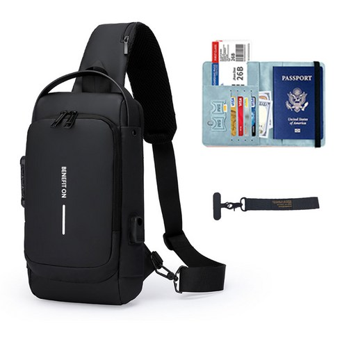
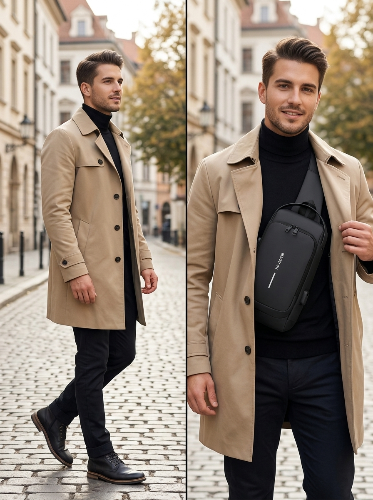
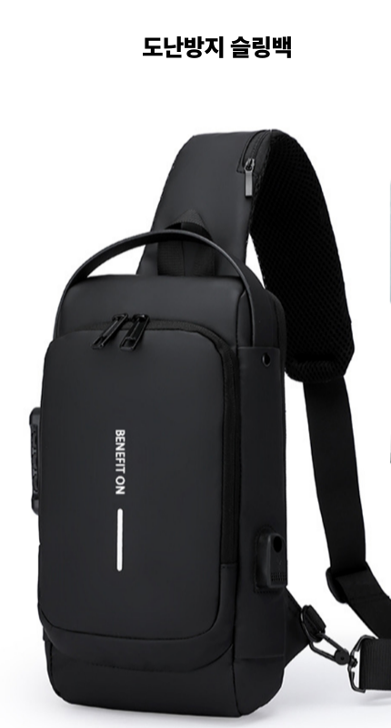
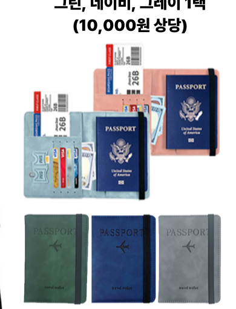
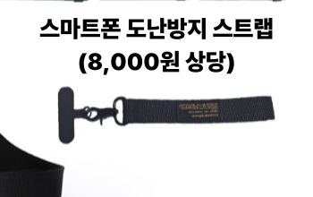
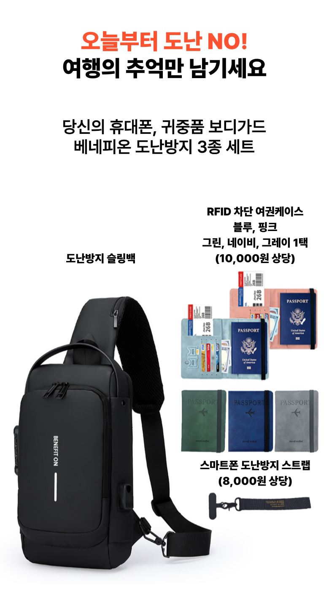

SCENE 01
지하철 개찰구 앞
교통카드를 꺼내려고 가방을 앞으로 돌리고, 지퍼를 다시 확인합니다.
파리 지하철을 타기 전에도, 카페에서 카드를 꺼낼 때도 가방을 가슴에 꼭 끌어안고 있나요?
두께 약 2cm, 무게 약 210g의 베네피온 슬링백. 여권·카드·납작한 휴대폰처럼 여행 중 자주 확인하는 소지품을 가슴 가까이에 정리하고, 겉옷 지퍼를 살짝 열어 사선 포켓에서 꺼내는 동선을 돕습니다.
안내이 포스팅은 쿠팡 파트너스 활동의 일환으로, 이에 따른 일정액의 수수료를 제공받습니다.

낯선 도시에서는 여권과 카드를 가까이 두고 싶습니다. 하지만 일반 가방은 인파 속에서 계속 신경 쓰이고, 복대는 결제할 때마다 옷을 들춰야 합니다. 여행 중 자주 반복되는 세 장면을 떠올려 보세요.
교통카드를 꺼내려고 가방을 앞으로 돌리고, 지퍼를 다시 확인합니다.
여권을 보여주려다 외투 안쪽과 주머니를 한 번 더 뒤집니다.
복대 속 카드를 꺼내려면 옷을 들어 올려야 하고, 백팩은 뒤에서 앞으로 돌려야 합니다.
그래서 필요한 것은 더 큰 가방이 아니라, 꺼내는 동선입니다.
가운데 드래그바를 좌우로 밀어 소매치기 불안에 가방을 꼭 끌어안은 모습과, 베네피온 슬링백으로 여유를 되찾은 여행자의 모습을 직접 비교해 보세요.
이 가방은 약 23 × 31cm, 두께 약 2cm의 슬림한 형태입니다. 여권·카드·티켓·납작한 휴대폰처럼 두께가 크지 않은 소지품을 나누어 넣을 때, 가슴과 옆구리 라인에 밀착해 착용하는 방식에 맞습니다.
인파를 지날 때마다 가방 위치와 지퍼를 계속 확인하게 됩니다.
필요한 소지품을 가슴 가까이에 두고, 겉옷 앞 지퍼만 열어 확인하는 동선으로 바꿉니다.
여권 · 카드 · 티켓 · 영수증 · 납작한 휴대폰
2cm를 넘는 두꺼운 물건 · 대형 보조배터리 · 텀블러 · 부피 큰 카메라
이제, 외투 안에서 꺼내는 동선을 살펴보세요. →

이동할 때, 여권을 꺼낼 때, 휴대폰으로 사진을 찍을 때까지—도난 위험이 있는 여행의 모든 순간을 가방 본체와 2종 필수 부속품으로 3중 보호합니다.

MAIN ITEM외투 안 밀착 수납과 1초 빠른 인출 동선

10,000원 상당 포함불법 전자 복제(스키밍) 차단 & 스마트 오거나이저

8,000원 상당 포함유럽 소매치기 날치기(Snatch) & 낙하 파손 원천 차단
휴대폰과 귀중품을 지키는 베네피온 도난방지 3종 세트의 공식 상세 안내를 확인하세요.

몸에 맞춘 슬링백과 2종 부속품이 결합되어, 인파 속에서도 겉옷 지퍼만 조금 열고 필요한 순간 즉시 물건을 다루는 쾌적한 여행 동선이 완성됩니다.
가슴과 옆구리 라인에 가방이 완전히 밀착되도록 일체형 와이드 스트랩 길이를 조절합니다.
여권·비상 카드는 RFID 차단 케이스에 넣어 안쪽 히든 지퍼에, 스마트폰은 도난방지 스트랩을 걸어 손에 쥐거나 전용 포켓에, 교통카드는 사선 이지 슬롯에 나누어 둡니다.
자켓 앞 지퍼를 약 10cm만 열고 사선 지퍼에서 카드를 쏙 꺼내 결제하고, 사진을 찍을 때도 폰 스트랩이 손목/가방에 연결되어 있어 날치기 걱정 없이 안심합니다.
말이 아니라 규격과 사용 의견으로 다시 확인해 보세요. ↓
약 23 × 31cm, 두께 약 2cm, 무게 약 210g. 얇은 여행 필수품을 몸 가까이에 두는 용도에 맞춘 규격입니다.
외투 안쪽 밀착 착용을 고려한 슬림한 형태
가방 자체의 무게 부담을 줄인 경량 설계
카드·티켓처럼 자주 확인하는 물건과 여권·장지갑처럼 따로 보관할 물건을 나누어 두는 구성
“트렌치코트와 패딩 안에 메었을 때 겉으로 가방을 멘 티가 덜 났다는 의견이 있었습니다.”
“자켓 지퍼를 살짝 열고 사선 지퍼에서 카드를 꺼내 결제하기 편했다는 의견이 있었습니다.”
“약 210g으로 워낙 가벼워서 하루 종일 2만 보 이상 걸어도 어깨 결림 없이 편안했다는 의견이 있었습니다.”
내 여행 짐에 맞는지, 마지막으로 확인해 보세요. ↓
슬림한 여행 가방과 3종 세트 구성에 대해 가장 많이 묻는 다섯 가지 질문을 확인하세요.
가방 자체는 두께 약 2cm, 무게 약 210g의 슬림핏 디자인입니다. 여권·카드·스마트폰·탑승권처럼 여행 중 자주 확인하고 꺼내야 하는 필수 소지품을 가볍고 안전하게 수납하여 외투 안쪽에 완벽히 밀착되도록 최적화되어 있습니다.
셔츠나 얇은 이너웨어 위에 대각선으로 멘 뒤 자켓·코트·바람막이를 덧입는 사용 방법이 안내되어 있습니다. 결제나 여권 제시 때는 겉옷 앞 지퍼를 약 10cm 열고 사선 지퍼에서 필요한 물건을 꺼냅니다.
제품 정보에는 스마트폰 전용 마그네틱 플랩 포켓이 안내되어 있지만, 기종별 호환 치수는 확인되지 않았습니다. 두께가 큰 케이스·보조배터리와 함께 넣을 계획이라면 주문 전 쿠팡 상품 페이지의 최신 옵션·문의 내용을 확인해 주세요.
RFID 차단 여권 케이스는 블루, 핑크, 그린, 네이비, 그레이 총 5가지 색상이 준비되어 있습니다. 10,000원 상당의 구성품으로, 주문 시 쿠팡 상품 옵션 선택 또는 출고 조건에 따라 구성되므로 주문 전 옵션을 확인해 주세요.
네, 스마트폰 기종과 무관하게 하단 충전 구멍이 있는 케이스를 사용하신다면 고정 패치를 끼워 바로 사용하실 수 있습니다. 접착제가 필요 없는 비파괴 결합 방식이며 유선 충전 케이블 연결도 방해하지 않습니다.
여권·카드·티켓처럼 자주 확인하는 물건을 3종 풀세트로 안전하게 챙기는 여행이라면, 마지막으로 옵션과 배송일을 확인해 보세요.
슬링백 본체와 RFID 여권케이스, 스마트폰 스트랩까지 3종 풀패키지 구성과 최신 가격·배송일을 상품 페이지에서 확인한 뒤 결정하세요.
안내이 포스팅은 쿠팡 파트너스 활동의 일환으로, 이에 따른 일정액의 수수료를 제공받습니다.